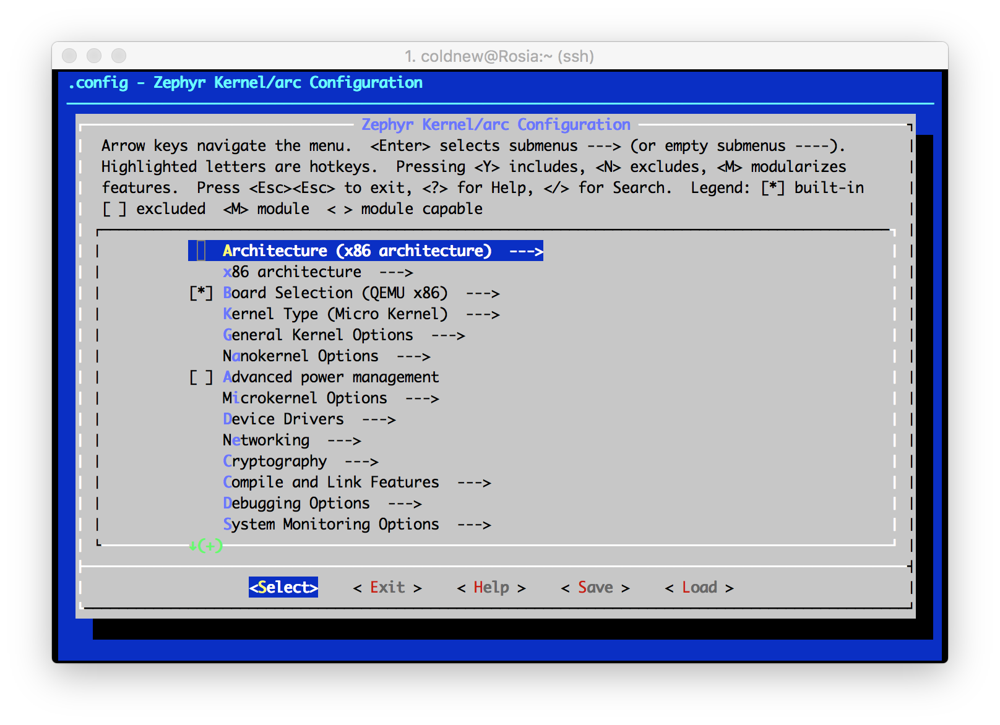

Zephyr 是 Linux 基金會最近發佈的即時作業系統 (RTOS) 項目，主要用於物聯網以及 IOT 設備，其前身為 Wind River 的 Rocket RTOS。和 Linux Kernel 不同的是，Zephyr 原始碼採用的是 Apache-2.0 授權。
關於更多 Zephyr 相關資訊，請參考 Linux 基金會的 專案網站 或是 LinuxGizmos.com 的報導 。
本文只是記錄我試玩 Zephyr 的一些資訊。
支援的開發版與平台
在撰寫這篇文章時，Zephyr 共支援以下目標與平台: (很可惜這邊列的板子我半片都沒有 Orz…)
- x86 指令集
- ARM (v7-M 以及 v7E-M) 指令集
- ARC EM4 指令集
取得 Zephyr kernel 原始碼與 SDK
Zephyr 原始碼採用 git 託管在 https://gerrit.zephyrproject.org/r/zephyr 這網站，我們可以用以下方式取得 v1.0.0 原始碼。
coldnew@Gentoo ~ $ git clone https://gerrit.zephyrproject.org/r/zephyr --branch v1.0.0
除了原始碼以外，我們還需要下載 Zephyr SDK ，裡面包含了不同平台編譯用的工具包 (toolchain)
coldnew@Gentoo ~ $ wget https://nexus.zephyrproject.org/content/repositories/releases/org/zephyrproject/zephyr-sdk/0.7.2-i686/zephyr-sdk-0.7.2-i686-setup.run
安裝 SDK 前置作業
除了下載 SDK 外，不同發行版的 Linux 還需要安裝一些 x86 函式庫來使用這份 SDK，具體請參照 Development Environment Setup on Linux 一文，由於本人的 Gentoo Linux 運作良好，這邊就不贅述。
安裝 SDK
取得 SDK 後，先將它加上可執行權限
coldnew@Gentoo ~ $ chmod +x zephyr-sdk-0.7.2-i686-setup.run
接下來將它裝到 /opt/zephyr 去 (註：在我的系統中，我的帳戶具有 /opt 資料夾的讀寫權限，一般情況下安裝到 /opt 需要使用 sudo 來安裝)
coldnew@Gentoo ~ $ ./zephyr-sdk-0.7.2-i686-setup.run Verifying archive integrity... All good. Uncompressing SDK for Zephyr 100% Enter target directory for SDK (default: /opt/zephyr-sdk/): Installing SDK to /opt/zephyr-sdk The existing directory /opt/zephyr-sdk will be removed! Do you want to continue (y/n)? [*] Installing x86 tools... [*] Installing arm tools... [*] Installing arc tools... [*] Installing iamcu tools... [*] Installing mips tools... [*] Installing additional host tools... Success installing SDK. SDK is ready to be used.
安裝完成後，我們可以到 /opt/zephyr 看這份 SDK 包含了哪些東西
coldnew@Gentoo /opt/zephyr-sdk $ tree -L 2 . . <b> ├── sysroots <b> │ ├── arc-poky-elf <b> │ ├── armv5-poky-eabi <b> │ ├── i586-poky-elf <b> │ ├── i686-pokysdk-linux <b> │ ├── iamcu-poky-elfiamcu <b> │ └── mips32r2-poky-elf <b> ├── version-arc-poky-elf ├── version-armv5-poky-eabi ├── version-i586-poky-elf ├── version-i686-pokysdk-linux ├── version-iamcu-poky-elfiamcu └── version-mips32r2-poky-elf 7 directories, 6 files
設定 SDK
安裝完 Zephyr SDK 後，我們可以設定以下環境變數來讓我們當前的 shell 可以使用這份 SDK
coldnew@Gentoo ~ $ export ZEPHYR_GCC_VARIANT=zephyr coldnew@Gentoo ~ $ export ZEPHYR_SDK_INSTALL_DIR=/opt/zephyr-sdk
當然每次要編譯 Zephyr 時都要重新設定環境變數很麻煩，因此我們可以將他寫到 ~/.zephyrrc 去
coldnew@Gentoo ~ $ cat <<EOF > ~/.zephyrrc export ZEPHYR_GCC_VARIANT=zephyr export ZEPHYR_SDK_INSTALL_DIR=/opt/zephyr-sdk EOF
Hello World (x86 QEMU)
完成 Zephyr SDK 的設定與安裝後，讓我們測試第一個範例程式 Hello World ，顧名思義就是會在虛擬機中顯示 Hello World 出來。
不過我們要先讓當前 shell 取得合適的開發環境變數，先來 source zephyr-env.sh 一下:
coldnew@Gentoo ~/zephyr $ source zephyr-env.sh
接著切換到 samples/hello_world/microkernel 去
coldnew@Gentoo ~/zephyr $ cd samples/hello_world/microkernel
coldnew@Gentoo ~/zephyr/samples/hello_world/microkernel $ tree -L 2 .
. <b>
├── Makefile
├── prj.conf
├── prj.mdef
├── README.txt <g>
└── src <b>
├── main.c
└── Makefile
1 directory, 6 files
我們測試的目標是 QEMU ，因此直接 make qemu 即可看到 Zephyr 編譯到 x86 環境下並運行的狀況
coldnew@Gentoo ~/zephyr/samples/hello_world/microkernel $ make qemu make[1]: Entering directory '/home/coldnew/zephyr' make[2]: Entering directory '/home/coldnew/zephyr/samples/hello_world/microkernel/outdir' Using /home/coldnew/zephyr as source for kernel GEN ./Makefile CHK include/generated/version.h CHK misc/generated/configs.c CHK include/generated/offsets.h CHK misc/generated/sysgen/prj.mdef To exit from QEMU enter: 'CTRL+a, x' [QEMU] CPU: qemu32 qemu-system-i386: pci_add_option_rom: failed to find romfile "vgabios-cirrus.bin" Hello World!
如果你看膩了這個結果，可以使用 C-a x 離開 QEMU 模擬。
一旦經過了編譯，你可以看到會多出一個 outdir 用來存放著編譯後的物件檔。
coldnew@Gentoo ~/zephyr/samples/hello_world/microkernel $ ls Makefile outdir<b> prj.conf prj.mdef README.txt<g> src
這個 outdir 是可以透過 make 系列命令清除乾淨的，我們也可以在 make help 看到如何清除專案的物件檔。
coldnew@Gentoo ~/zephyr/samples/hello_world/microkernel $ make help Cleaning targets: clean - Remove most generated files but keep configuration and backup files mrproper - Remove all generated files + config + various backup files distclean - mrproper + remove editor backup and patch files pristine - Remove the output directory with all generated files skip...
此外， Zephyr 也支援 make menuconfig ，我們可以在選單直接選取我們的目標。
coldnew@Gentoo ~/zephyr/samples/hello_world/microkernel $ make menuconfig

Hello World (arm QEMU)
我們接下來試試 Hello World 運作在 ARM Cortex-M3 的 QEMU 的情況，了解更多後說不定我們就可以自己將 Zephyr 移植到 STM32 平台，或是其他手中有的開發版環境去。
一樣切換到 samples/hello_world/microkernel 去，如果剛剛已經編譯過 x86 版本的話，要記得將 outdir 清乾淨
coldnew@Gentoo ~/zephyr/samples/hello_world/microkernel $ make distclean
接下來編譯的時候指定目標端為 qemu_cortex_m3 並且 ARCH=arm
coldnew@Gentoo ~/zephyr/samples/hello_world/microkernel $ make BOARD=qemu_cortex_m3 ARCH=arm qemu make[1]: Entering directory '/home/coldnew/zephyr' make[2]: Entering directory '/home/coldnew/zephyr/samples/hello_world/microkernel/outdir' Using /tmp/zephyr-project-fork as source for kernel GEN ./Makefile CHK include/generated/version.h CHK misc/generated/configs.c CHK include/generated/offsets.h CHK misc/generated/sysgen/prj.mdef To exit from QEMU enter: 'CTRL+a, x' [QEMU] CPU: cortex-m3 Hello World!
要離開的話，一樣是使用 C-a x 來離開 QEMU
由於編譯出來的執行檔會出現在 outdir ，因此我們可以在 outdir 裡面找到編譯出來的 ELF 檔以及二進制文件，預設這些東西皆是以 zephyr.* 來命名。
coldnew@Gentoo ~/zephyr/samples/hello_world/microkernel/outdir $ ls zephyr.* zephyr.bin<g> zephyr.elf<g> zephyr.lnk zephyr.lst zephyr.map zephyr.strip<g>